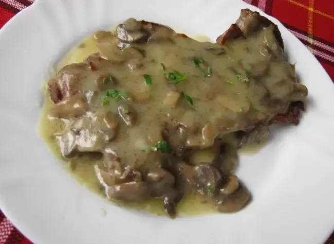

Основні страви
Каварма з курки
Тушкована курка з цибулею, перцем і спеціями в горщику.
0.400 кг / 13.80 лв
Каварма зі свинини
Ароматне рагу зі свинини з овочами.
0.400 кг / 13.80 лв
Куряче філе з грибним соусом
Соковите куряче філе з грибним соусом.
0.350 кг / 15.90 лв

Свинина з грибним соусом
Ніжна свинина в насиченому грибному соусі.
0.350 кг / 15.90 лв
Сир по-шопськи
Запечений сир з помідорами, яйцями та перцем у горщику.
0.350 кг / 9.90 лв
Бургери з картоплею
Курячий бургер
Соковита куряча котлета з овочами та картоплею.
0.500 кг / 14.00 лв
Свино бургер
Бургер зі свинячою котлетою та гарніром.
0.500 кг / 14.00 лв
Яловичий бургер
Класичний бургер з яловичини з картоплею фрі.
0.500 кг / 14.00 лв
Вегетаріанський бургер
Рослинний бургер зі свіжим салатом.
0.500 кг / 13.80 лв
Омлет
Омлет натюр
Класичний омлет із яєць, за бажанням з добавками.
0.300 кг / 7.00 лв
Добавки (по избор):
+ Кашкавал — 0.050 кг / 1.20 лв
+ Сирене — 0.050 кг / 1.20 лв
+ Бекон — 0.050 кг / 2.00 лв
+ Шунка — 0.050 кг / 2.00 лв
+ Гъби — 0.050 кг / 1.20 лв
+ Микс зеленчуци — 0.050 кг / 1.20 лв
+ Луканка — 0.050 кг / 2.00 лв
+ Яйце — 1 бр / 1.60 лв
Английска закуска
Англійський сніданок
Повний сніданок: яйця, квасоля, ковбаса, бекон, тост.
0.600 гр / 19.90 лв